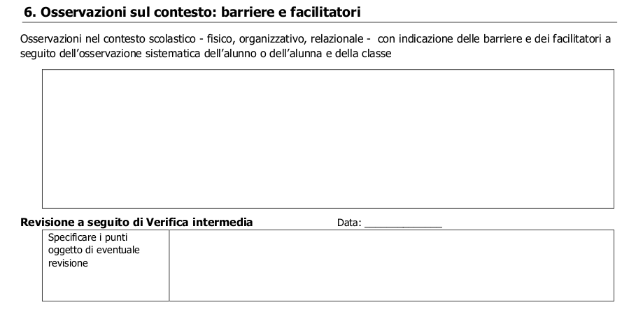
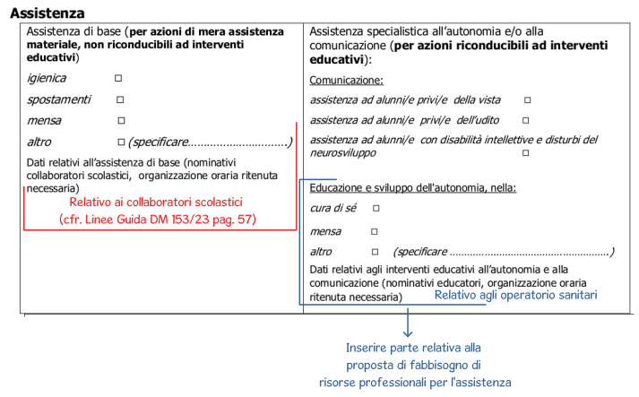
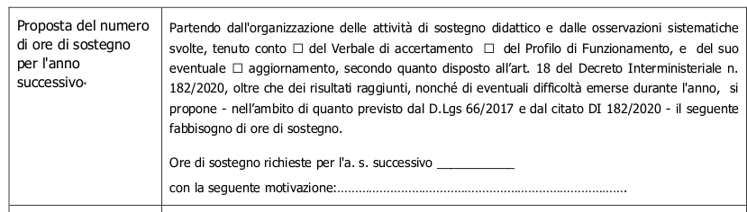

Formazione dell'IC1 "N. Mandela" di Mogliano Veneto (TV) sulla compilazione del Piano Educativo Individualizzato. Tutti i documenti relativi al PEI possono essere scaricati dai docenti con l'account di Istituto al seguente collegamento.
1 - Intestazione
In questo punto bisogna inserire l'intestazione della scuola che viene fornita dalla Segreteria.
2 - Anno scolastico e alunno
Qui va inserito l'anno scolastico in corso nel quale si sta predisponendo il documento. Il nome e cognome dell'alunno/a ed eventualmente (se la scuola lo utilizzasse) un codice per l'alunno.
3 - Accertamento
Questa sezione fa riferimento al Verbale di Riconoscimento di Handicap dell'alunno in possesso alla scuola. Ogni verbale riporta sia la data di rilascio (alla fine del documento) sia il periodo di validità. Ogni AULSS ha un suo modello di Verbale di accertamento. Eccone un esempio di Verbale di Accertamento. Il Profilo di Funzionamento è un documento che attualmente non è ancora utilizzato dalle AULSS quindi si fa ancora riferimento alla Diagnosi Funzionale e al Profilo Dinamico Funzionale.
4- Tempistica
Le diverse parti del PEI vanno compilate in momenti diversi ma è importante sempre aggiornare il PEI cartaceo con le parti nuove o modificate. Ecco la sequenza di compilazione:
GLO di approvazione definitiva (entro 31.10)
Devono essere compilate le seguenti sezioni:
Sezione iniziale e composizione del GLO (secondo il Decreto di costituzione del GLO )
Sezioni: 1, 2, 3 (se presente Progetto Individuale), 4, 5, 6, 7, 8, 9, 10 (per le classi terze della Scuola Secondaria)
Si ricorda che non tutte le sezioni sono presenti in tutti i moduli dei diversi ordini.
GlO intermedio di Verifica del PEI
In questa riunione devono essere compilate e sostituite nell'originale le parti in cui è presente la dicitura: "Revisione a seguito di Verifica intermedia". Nello specifico:
Eventuale aggiornamento del GLO (per nuovi membri) da inserire come pagina aggiuntiva all'originale.
Sezioni: 4, 5, 6, 7, 8.4, 9
GlO finale di Verifica e richiesta risorse (entro 30.06)
In questa fase devono essere compilate le sezioni che riportano la dicitura: "Verifica conclusiva degli esiti" e in particolare:
Sezioni: 5, 7, 8
Tutta la Sezione 11 con richiesta delle risorse in accordo con quanto presentato nel Progetto di Deroga e nella Richiesta di Assistente (del 15.03).
Firme dei Componenti del GLO (anche se assenti, a cura della Funzione Strumentale)
In questa parte vengono inserite le firme e i timbri del Dirigente per ogni periodo in cui viene predisposto un PEI.
Gestione delle firme e dei Verbali
Nel presente anno scolastico, in riferimento a questa parte, si ricordano queste indicazioni:
La data da inserire sarà quella del GLO.
Il numero di Verbale sarà 1 per il primo GLO, 2 per il secondo e 3 per il terzo.
La Dirigente firmerà la parte a Lei dedicata apponendo il timbro della Scuola una volta che il PEI sarà consegnato in Segreteria Didattica.
Ecco un esempio di parte compilata.
Il Gruppo di Lavoro Operativo - GLO -
Il gruppo di Lavoro Operativo, (art.9 comma 10 D.Lgs. 66/2017, art. 1 e 3 D. 182/2020 e allegate Linee Guida) oltre a prendere tutte le decisioni riguardanti l'inclusione degli alunni con disabilità, elabora ed approva il PEI.
Composizione del GLO
Il GLO è composto, secondo quanto previsto dalla normativa, da tutti i docenti della classe ed è presieduto dal Dirigente o da un suo delegato. All'inizio dell'anno il Dirigente, con apposito decreto, definisce la composizione del GLO.
Firme di presenza
Secondo quanto previsto dalle "Linee Guida" allegate al D.I. 182/2020 (pag. 12) "La firma di tutti i membri del GLO è prevista sul PEI redatto in via definitiva entro il mese di ottobre e, alla fine dell'anno scolastico, nell'incontro di verifica". Per questo è importante ricordare di far firmare tutti i presenti. Ecco un esempio di sezione compilata.
È importante ricordare comunque che tutti i membri del GLO devono firmare il PEI e quindi il docente di Sostegno dovrà assicurarsi che tutti i presenti firmino la parte dei PEI. La procedura per avere tutte le firme potrebbe essere questa:
Tutti i componenti del GLO firmano il PEI in questa sezione.
Per eventuali Esperti esterni, che si siano collegati on-line, si può consegnare una pagina vuota alla famiglia da riportare con le firme dell'esperto.
Una volta avute le firme di tutti i componenti del GLO, eccetto del clinico, il docente di Sostegno consegna in Segreteria il PEI con il Verbale dell'incontro.
Il Dirigente, una volta arrivato il PEI in Segreteria, firma la parte iniziale.
Partecipazione al GLO
Agli incontri del GLO partecipano:
Famiglia dell'alunno/a con disabilità
Unità di Valutazione Multidisciplinare (UVMD) per l'adeguato supporto. L'unità può dare il proprio supporto sia essendo presente agli incontri del GLO, sia condividendo documentazione o offrendo adeguata consulenza.
Altre figure professionali che intervengono per favorire l'integrazione dell'alunno/a con disabilità. Queste devono essere professionisti che si occupano in modo specifico dell'alunno/a e possono essere sia interne che esterne.
Figure interne: possono essere i Referenti per l'inclusione o per l'orientamento oppure possono essere i collaboratori che si occupano in modo continuo dell'autonomia di un alunno/a. Rimane comunque al Dirigente la decisione se inserirli a pieno titolo nel GLO oppure se convocarli di volta in volta.
Figure esterne: sono altri professionisti quali Assistenti all'autonomia o alla comunicazione oppure Operatori del Comune nel caso ci sia un Progetto Individuale. Possono anche essere altri esperti quali terapisti o specialisti sia dell'ASL sia privati. In caso di privati, la famiglia può far richiesta che un solo specialista partecipi alla riunione autorizzandolo. Lo specialista ha una funzione consultiva e non decisionale. Per questi professionisti il Dirigente acquisisce la disponibilità all'incarico e la riservatezza nell'uso di dati sensibili. Tra le figure esterne possono essere presenti anche dei rappresentanti dei Gruppi per l'Inclusione Territoriali (non ancora definiti).
Ecco una mappa grafica sulla composizione del GLO
Svolgimento dei GLO
Secondo quanto indicato anche dalle Linee Guida gli incontri del GLO sono almeno 3 durante l'anno:
Primo incontro entro il 31 ottobre: di discussione e approvazione del PEI per l'anno in corso. Nel caso di ritardo nella nomina di docenti si può derogare a questa data anche se emerge l'importanza che il documento sia approvato nelle prime settimane di scuola per ridurre i tempi senza una effettiva programmazione. In questo incontro tutti i componenti del GLO firmano il PEI che diventa effettivo.
Secondo incontro tra novembre e aprile: questo incontro è necessario per apportare modifiche o integrazioni al PEI dal momento che esso è un documento che può essere sempre modificato per adattarsi alle necessità contingenti.
Terzo incontro entro il 30 giugno: questo incontro è utile per far emergere delle proposte didattiche per l'anno successivo e per indicare il fabbisogno di ore di Sostegno per l'anno successivo. Anche in questo incontro tutti i componenti del GLO firmano il PEI.
Solo per gli alunni che ottengono una nuova certificazione oppure che si iscrivono per la prima volta a scuola e hanno una certificazione viene predisposto un incontro per la stesura di un PEI in forma provvisoria entro il 30 giugno.
La successione che porta al GLO potrebbe essere così descritta:
Il Dirigente, sulla base della delibera dei componenti del GLO, invia la convocazione all'incontro a tutti gli aventi diritto a partecipare alla riunione.
L'incontro avverrà, salvo motivata necessità, in ore non coincidenti con l'orario di lezione. (modifica D.M. 153 art. 3 comma 1)
Se qualche componente del GLO non sarà presente, la riunione avrà comunque validità e in questa sede si prendono tutte le decisioni importanti riguardanti l'alunno/a. Nel caso un componente non possa essere presente potrà comunque prendere visione di tutti i documenti che si andrà a discutere ed eventualmente potrà inviare osservazioni.
A conclusione dell'incontro verrà stilato un Verbale che, una volta condiviso per eventuali correzioni, verrà firmato dal Segretario e dal Presidente.
È importante ricordare che il Verbale viene firmato solo dal Presidente e dal Segretario e non da tutti i componenti del GLO. Ecco una mappa grafica sulle funzioni del GLO:
Il Quadro informativo e gli elementi della documentazione
Il Quadro informativo
Questa sezione prevede che la famiglia (o chi ne esercita la responsabilità genitoriale) partecipi attivamente alla stesura del PEI descrivendo sia situazione familiare in generale sia il comportamento dell'alunno/a all'esterno del contesto scolastico. In questa sezione, in particolare con famiglie che hanno difficoltà con la lingua o non sono ben integrate i membri del GLO possono sostenere la famiglia nella compilazione.
Elementi della documentazione
In questa sezione vanno riportate le informazioni relative al Profilo di Funzionamento se presente o sulla Diagnosi Funzionale o Profilo Dinamico Funzionale che sono agli atti della scuola. Il GLO deve quindi, prima di intraprendere la stesura del PEI prendere visione della documentazione riguardante l'alunno/a per operare in continuità con quanto fatto precedentemente. Questa sezione serve anche per individuare quali aree verranno prese in considerazione nella stesura del PEI e nelle quali verranno predisposti gli interventi. Partendo dall'analisi della documentazione diventerà chiaro anche se in alcune aree si potranno omettere degli interventi perché non necessari. Il Profilo di Funzionamento sarà il documento che andrà a sostituire sia la Diagnosi Funzionale sia il Profilo Dinamico Funzionale; viene redatto dall'Unità di Valutazione Multidisciplinare con la collaborazione della famiglia e di un rappresentante della scuola. È il documento propedeutico al PEI e al Progetto Individuale ed è aggiornato ad ogni grado di istruzione.
Progetto individuale
Il Progetto Individuale è un documento redatto dall'Ente Locale con l'ASL locale su richiesta dei genitori . Nel Progetto individuale l'Ente Locale individua possibili sostegni alle famiglie con difficoltà di vario genere: da quelle economiche alle difficoltà legate all'emarginazione sociale. In questa sezione emerge come il PEI prenda in considerazione anche gli aspetti extrascolastici. Se il Progetto Individuale è stato redatto va inserita qui una sua sintesi aggiungendo informazioni sul coordinamento tra interventi scolastici ed extrascolastici. Se invece il Progetto Individuale non è stato redatto ma è stato richiesto dalla famiglia, è possibile inserire in questa sezione alcune osservazioni utili alla sua stesura.
Sezione 4 - L'Osservazione nelle diverse aree
Come punto di partenza per la stesura del PEI, l'osservazione è un aspetto molto importante ed "è affidata a tutti i docenti della classe" (art. 8 Decreto 182/2020) . Invece delle conosciute aree il D. Lgs. 66/2017 introduce delle dimensioni la cui osservazione è fondamentale per rilevare i punti di forza sui quali costruire un ambiente di apprendimento adatto ad alunni con bisogni educativi speciali. Appare anche evidente come il concetto di apprendimento non sia solo rivolto alla sfera cognitiva ma in senso trasversale prenda in considerazione anche gli aspetti della relazione, della comunicazione e dell'autonomia.
Dimensione relazione, dell'interazione e socializzazione
Questa dimensione sostituire l'area affettivo relazionale presente nella precedente normativa. In questa dimensione si osservano sia la sfera affettivo relazionale sia la sfera dei rapporti sociali.
Sfera affettivo relazionale: fa riferimento all'area del sé andando ad identificare le variabili emotivo/affettive che regolano l'interazione e la motivazione verso la relazione consapevole e verso l'apprendimento.
Sfera dei rapporti sociali: fa riferimento alle relazioni all'interno del gruppo dei pari o degli adulti ed analizza la capacità di giocare o studiare con i compagni, rispettare le regole e condividere l'impegno, i tempi e i risultati comuni.
Come sottolinea Ianes ("Il nuovo PEI" di Ianes et al. 2021) è importante che l'alunno abbia raggiunto un sviluppo cognitivo e metacognitivo adeguato per cogliere le relazioni e i nessi causali tra i comportamenti, gli atteggiamenti e le azioni all'interno delle relazioni umane. Una delle tecniche che maggiormente favoriscono lo sviluppo delle abilità di relazione è l'apprendimento cooperativo perché il fatto di lavorare in piccoli gruppi permette costruire relazioni positive e significative tra gli studenti.
Nell'ICF troviamo alcuni codici che ci possono servire per l'osservazione di questa area nel dominio dell'Attività e Partecipazione:
Capitolo 2: Compiti e richieste generali:
Gestire la tensione e le altre richieste di tipo psicologico (d240)
Controllare il proprio comportamento (d250)
Capitolo 3: Comunicazione:
Conversazione (d350)
Discussione (d355)
Capitolo 7: Interazioni e relazioni interpersonali:
Interazioni interpersonali generali (d710-d729)
Relazioni interpersonali particolari (d730-d779)
Capitolo 9: Vita sociale, civile e di comunità.
Anche nella parte relativa ai Fattori ambientali troviamo dei codici utilizzabili quali quelli presenti nel Capitolo 3: Relazioni e sostegno sociale e nel Capitolo 4: Atteggiamenti.
Dimensione della comunicazione e del linguaggio
Questa dimensione va a sostituire le precedenti aree della comunicazione e del linguaggio. In questa dimensione si osservano due aspetti:
La competenza linguistica che è intesa come: comprensione del linguaggio orale e come produzione verbale tenendo presente l'uso comunicativo del linguaggio verbale o di altri linguaggi. Tra la capacità di produzione verbale si possono distinguere anche le competenze fonologiche (capacità di percepire e riprodurre suoni), la semantica (capacità di comprendere ed esprimere il significato delle parole) e la grammatica (capacità di usare le regole per parlare). Dal punto di vista dell'uso che si fa del linguaggio è importante prendere in considerazione le funzioni della comunicazione che possono essere molteplici: ottenere attenzione, commentare, richiedere ecc. e anche i contesti cioè i luoghi in cui viene usato un certo tipo di comunicazione.
La dimensione della comunicazione intesa come:
Modalità di interazione: che riguarda il modo in cui una persona comunica come ad esempio: atti motori (spingere una persona verso qualcosa) oppure gesti oppure anche singole immagini fino ad arrivare al linguaggio parlato vero e proprio.
Presenza e tipologia di contenuti
Uso dei mezzi privilegiati.
Ianes ("Il nuovo PEI" di Ianes et al. 2021) fa notare che le abilità comunicative sono generalmente considerate il più importante fattore attraverso il quale la persona con disabilità diviene in grado di sviluppare relazioni con le altre persone e partecipare alle attività a scuola, casa e nella comunità. I progressi nella comunicazione appaiono poi direttamente connessi alla riduzione dei comportamenti problematici.
In riferimento all'ICF si possono individuare alcuni codici utili all'osservazione in questa area nel dominio dell'Attività e Partecipazione presenti nel capitolo 3: Comunicazione e in particolare Comunicare-ricevere (d310-d329). Per descrivere invece i Fattori ambientali possiamo far riferimento al capitolo 1 relativo ai Prodotti e tecnologia in particolare Prodotti e tecnologia per la comunicazione (e125).
Dimensione dell'autonomia e dell'orientamento
Questa dimensione incorpora e sostituisce tre aree della precedente normativa (DPR 24.02.1994) cioè: l'area dell'autonomia personale e sociale, l'area motorio-prassica e l'area sensoriale. Questa dimensione osserva le abilità utili per vivere in modo autonomo e indipendente e si divide in tre grandi sotto dimensioni:
La dimensione dell'autonomia personale e sociale .
Nell'autonomia personale si valutano tutte quelle abilità legate ad aspetti concreti quali l'igiene personale, l'abbigliamento, l'alimentazione, la vita domestica. Queste abilità toccano molte altre capacità come quelle di lavarsi, di mangiare adeguatamente, di vestirsi e riporre gli abiti fino alla cura degli ambienti domestici.
Nell'autonomia sociale si prendono in considerazione tutte quelle capacità che permettono all'alunno di muoversi, viaggiare, affrontare la strada e orientarsi al fine di migliorare la sua qualità di vita. Anche all'interno della scuola si possono evidenziare le competenze di autonomia sociale negli aspetti di orientamento nell'edificio ma anche di capacità di organizzazione del materiale e delle consegne.
L'orientamento si può riferire anche al tempo con la conoscenza delle scansioni temporali all'interno dell'anno, dei mesi e della settimana nonché alla scansione delle materie scolastiche giornaliere.
Dimensione motorio-prassica: questa dimensione fa riferimento alla motricità fine e globale:
Motricità globale: riguarda tutte le abilità grosso-motorie che implicano la coordinazione, l'equilibrio e gli spostamenti.
Motricità fine: riguarda invece quelle abilità fino-motorie che implicano la coordinazione oculo-manuale, la prensione, le prassie quali lavarsi le mani, abbottonare/sbottonare ecc.
Dimensione sensoriale: riguarda la funzionalità uditiva, visiva e tattile.
Ianes (Opera cit.) fa notare come Al fine di integrare efficacemente il PEI con un ampio Progetto di vita, sapersi lavare, vestire, preparare un panino o riordinare la casa possono costituire talvolta una conquista di maggior rilievo rispetto al saper leggere un brano in inglese senza commettere grossolani errori.
Nel dominio Attività e Partecipazione dell'ICF troviamo alcuni codici che possono essere utili all'osservazione quali quelli presenti nel Capitolo 2: Compiti e richieste generali, nel Capitolo 4 Mobilità, nel Capitolo 5Cura della propria persona, nel Capitolo 6Vita domestica, nel Capitolo 8Aree di vita principali e nel Capitolo 9Vita sociale, civile e di comunità. Anche nella sezione dedicata ai Fattori ambientali si possono usare alcuni descrittore presenti nel Capitolo 1: Prodotti e tecnologia e nel Capitolo 5Servizi, sistemi e politiche.
Dimensione cognitiva, neuropsicologica e dell'apprendimento
Questa ampia dimensione riguarda tre aspetti descritti nelle aree della normativa precedente: l'area cognitiva, neuropsicologica e dell'apprendimento. Vediamo di prendere in esame le tre componenti di questa dimensione:
Dimensione cognitiva: questa dimensione prende in considerazione la capacità di risolvere problemi propri alla fascia d'età dell'alunno. Questa capacità di risolvere problemi implica anche una riflessione metacognitiva sul proprio stile cognitivo. È molto importante infatti per un docente capire qual è la modalità con la quale un alunno elabora il materiale. Ianes (Opera cit.) fa riferimento ad alcuni stili cognitivi:
Sistematico/intuitivo: chi ha uno stile cognitivo sistematico procede per piccoli passi e considera tutti gli elementi; chi invece ha uno stile intuitivo formula e lavora su ipotesi generali che valuta successivamente.
Globale/analitico: chi ha uno stile cognitivo globale privilegia la visione generale mentre chi è analitico si sofferma sui singoli dettagli.
Impulsivo/riflessivo: una persona impulsiva risponde spesso senza riflettere mentre chi è riflessivo valuta con più calma.
Verbale/visuale: un alunno che preferisce attività linguistiche è una persona con stile cognitivo verbale mentre chi preferisce le immagini è più visuale.
Autonomo-creativo/dipendente dal campo: un alunno autonomo elabora da sé nuove possibilità e soluzioni mentre un alunno dipendente dal campo subisce maggiormente le sollecitazioni del contesto in cui si trova.
Dimensione neuropsicologica: questa dimensione è relativa agli aspetti della memoria, dell'attenzione e della capacità dell'organizzazione spazio-temporale.
Capacità di memoria: la capacità di acquisire, conservare e recuperare informazioni concetti, procedure, informazioni, sia a breve che a lungo termine.
Attenzione: la capacità di inibire stimoli irrilevanti o disturbanti (focus di attenzione), la capacità di elaborare contemporaneamente stimoli diversi (attenzione divisa) e la capacità di mantenere l'attenzione per un tempo sufficiente (attenzione mantenuta).
Organizzazione spazio temporale: la capacità di riconoscere il tempo e di organizzare le proprie azioni in funzione di una scansione temporale.
Dimensione dell'apprendimento: riguarda tutte le competenze messe in campo per "Imparare a imparare" cioè per ampliare sempre più la propria capacità di comprendere ed elaborare testi, formule, immagini ecc. Questa dimensione coinvolge gli aspetti cognitivi e neuropsicologici ma anche gli aspetti metacognitivi ed emotivi.
Ecco alcuni esempi di aspetti da osservare in questa dimensione:
Lettura e scrittura: le abilità strumentali di leggere un testo o di scrivere un testo riconoscendo e riproducendo le regole della lingua usata.
Comprensione del testo: comprendere i collegamenti intrinseci ad un testo come i nessi causali e temporali. Saper individuare i personaggi, i luoghi, le azioni e di comprendere la struttura di un testo.
Calcolo: tutti i meccanismi di calcolo usati in relazione all'età dell'alunno.
Senso di autoefficacia: fiducia nelle proprie capacità e percezione di poter riuscire nel compito dato. Capacità di autoregolazione del comportamento per ottimizzare l'apprendimento di sapersi valutare a conclusione del lavoro svolto.
Motivazione: riuscire ad investire energie nell'apprendimento anche senza una ricompensa esterna immediata.
Nella parte dell'ICF dedicata all'Attività e partecipazione si possono trovare molti codici utili per l'osservazione come quelli presenti nel Capitolo 1: Apprendimento e applicazione delle conoscenze, quelli del Capitolo 2: Compiti e richieste generali, del Capitolo 8: Aree di vita principali in particolare Istruzione (d810-839). I Fattori ambientali possono essere invece descritti con i codici del Capitolo 1: Prodotti e tecnologia e del Capitolo 5:Servizi, sistemi e politiche. (adattato da "Costruire il nuovo PEI" di Ianes et al. 2021)
Sezione 5 - La Progettazione
Se la sezione precedente è stata dedicata all'osservazione, questa sezione parte dai punti di forza dell'alunno/a per andare ad ampliare o sviluppare le capacità, facoltà ed abilità. È importante sottolineare come la progettazione deve essere redatta sempre "a seguito dell'attenta e sistematica osservazione [...]" (Linee Guida); per questo sarà necessario prevedere un periodo di osservazione prima di procedere alla progettazione. La progettazione prevede tre momenti specifici: l'individuazione degli obiettivi (cioè su cosa si vuole lavorare), la definizione degli interventi, strategie e strumenti (cioè come e con cosa si vuole lavorare) e infine la Verifica (cioè come si valutano i progressi).
L'individuazione degli obiettivi
Gli obiettivi vengono individuati tenendo conto delle dimensioni come definite nella precedente sezione. Questi obiettivi sono trasversali alle materie che devono sviluppare le potenzialità capacità, facoltà ed abilità degli studenti. Ianes (Opera cit.) fa anche notare come sia sempre importante calibrare gli obiettivi graduando da una minore a maggiore complessità e prevedere obiettivi a lungo, medio e breve termine. Gli obiettivi a lungo termine riguardano il più ampio Progetto di Vita dell'alunno, quelli a medio termine riguardano mesi oppure un anno scolastico e quelli a breve termine sono la loro scomposizione in sotto obiettivi secondo l'analisi del compito. È importante notare che gli obiettivi devono essere specifici e relativi a precisi esiti attesi in modo da poter individuare le modalità e i criteri di verifica del loro raggiungimento. Ecco alcuni esempi di obiettivi:
Sostenere e migliorare la capacità di socializzazione
Essere collaborativo nel gruppo e rispettare le regole
Ridurre progressivamente i comportamenti oppositivi o le stereotipie
Interagire positivamente con i compagni
Sviluppare con il supporto del docente la capacità di riconoscere l'appropriatezza, o meno, delle proprie emozioni relativamente a situazioni nuove.
Dimensione Comunicazione e linguaggio
Potenziare le capacità comunicative verbali e non verbali.
Sviluppare la comprensione dei messaggi nel linguaggio parlato con ampliamento del lessico.
Sviluppare il linguaggio verbale per esporre un fatto legato al vissuto personale, utilizzando in modo efficace frasi strutturalmente semplici e un lessico più ricco, servendosi di supporti adeguati.
Acquisire strategie per l'autoregolazione della prosodia (in particolare controllare il volume e il tono della voce)
(adattato da "Costruire il nuovo PEI" di Ianes et al. 2021)
Interventi didattici e strategie
In questa sezione vanno indicate le strategie e gli strumenti adatti al raggiungimento degli obiettivi descritti sopra. È in questa sezione che si possono concordare e scrivere le strategie trasversali maggiormente utili al fine di sviluppare le capacità degli alunni. Ecco alcuni esempi di strategie:
Attività di apprendimento cooperativo: in piccolo gruppo o a coppie con diverse tipologie.
Peer tutoring: identificazione di una modalità che preveda l'aiuto da parte di un compagno.
Laboratori: anche fuori dall'aula o con un gruppo ristretto. Possono rientrare anche specifiche attività finalizzate a ridurre i comportamento problematici.
Attività extracurricolari: attività concordate durante il GLO legate al Progetto di vita dall'alunna/o che possono riguardare l'autonomia oppure altre attività anche manuali (danza, cucina...).
(adattato da "Costruire il nuovo PEI" di Ianes et al. 2021)
Queste sono strategie trasversali che non riguardano una singola disciplina ma che strutturano e individuano le migliori prassi di lavoro per l'alunna/o nell'anno scolastico in corso. Anche semplici indicazioni, quali quella di anticipare la conoscenza delle attività o dei contenuti, possono trovare posto in questa sezione così come tutti gli strumenti finalizzati al raggiungimento degli obiettivi. Gli strumenti quindi che verranno usati tutto l'anno vanno qui definiti nello specifico; ad esempio l'uso del computer deve essere esplicitato così come l'uso di strumenti compensativi e misure dispensative (tabelle, mappe, schemi...).
Metodi di verifica e valutazione
Questa sezione è dedicata alla esplicitazione di tutto quello che riguarda, trasversalmente alle discipline, la verifica e valutazione. È importante ricordare la differenza tra una prova di verifica e una valutazione. La prima può essere definita come una raccolta di informazioni su una prestazione. Dopo aver raccolto numerose informazioni si passa invece a valutare il processo di apprendimento mettendo in luce i miglioramenti e riflettendo sugli aspetti ancora da migliorare. La valutazione è infatti l'attribuzione di un valore al complessivo percorso scolastico. Le osservazioni forniscono la base sulla quale il docente valuta il percorso. Secondo quanto esplicitato nel D.lgs. 62/2017:
"La valutazione ha per oggetto il processo formativo e i risultati di apprendimento [...], ha finalità formativa e educativa e concorre al miglioramento degli apprendimenti e al successo formativo degli stessi, documenta lo sviluppo dell'identità personale e promuove la autovalutazione in relazione alle acquisizioni di conoscenze, abilità e competenze. "
In particolare nel D.lgs. 66/2017 all'art. 7 comma 2d, vengono definiti due importanti elementi che vanno esplicitati nel PEI e quindi discussi dal GLO: essi sono le modalità di verifica e i criteri di valutazione. Per questo, secondo F. Fogarolo (in "Costruire il PEI" di Ianes et al.), bisogna definire tre aspetti:
I contenuti: cioè cosa si valuta: obiettivi, competenze, abilità, in riferimento a ciascuna disciplina.
Le modalità: cioè come si verifica, con che strumenti: griglie di osservazione o di autovalutazione, prove differenziate, personalizzate, con l'uso di strumenti etc...
I criteri: cioè le prestazioni misurabili che definiscono se un traguardo può considerarsi raggiunto e eventualmente quali correttivi personalizzati applicare.
Ecco alcuni esempi di modalità di verifica:
Verifica della costanza, puntualità e autonomia (l'alunna/o si prepara, porta il materiale, riordina) nella frequenza delle attività scolastiche.
Le verifiche saranno coerenti con quanto previsto dal PEI, saranno differenziate e personalizzate per modi, tempi, contenuti rispetto alle prove assegnate alla classe e saranno svolte al termine di ogni percorso di apprendimento e finali.
I metodi di verifica potranno essere: prove scritte/orali sincrone o asincrone rispetto alla classe; prove graduate con domande a completamento; esercitazioni individuali; schede semi-strutturate o strutturate; rappresentazioni grafiche o prove pratiche; compiti autentici o osservazioni.
In questa sezione si può anche fare riferimento alla buone prassi prima o dopo i momenti di verifica come ad esempio il fatto di rendere noto in anticipo la tipologia e le modalità di verifica eventualmente assegnando anche esercizi simili a quelli presenti nella verifica. Allo stesso modo, si possono indicare le buone prassi per la valutazione che potrebbe prevedere un momento di autovalutazione da parte dell'alunno oppure un momento di valutazione condiviso tra docenti, genitori e alunna/o stesso.
Sezione 6 - Osservazioni sul contesto
Questa sezione è dedicata all'osservazione del contesto, al fine di rilevare barriere e facilitatori da considerare per mettere in atto interventi efficaci.

Questa sezione introduce una nuova prospettiva che era già stata indicata dal D.lgs. 66/2017 quando nell'art 7 comma 2b si dice quanto segue:
"Il PEI [...] deve tener conto dell'accertamento della condizioni di disabilità in età evolutiva, ai fini dell'inclusione scolastica, [...] avendo particolare riguardo all'indicazione dei facilitatori e delle barriere, secondo la prospettiva bio-psico-sociale alla base della classificazione ICF dell'OMS"
Questo nuovo PEI ha quindi come base l'ICF e per questo bisogna soffermarsi un attimo a capire il cambio di prospettiva che questa classificazione introduce fin dalla sua pubblicazione nel 2001 (o dal 2004 nella versione per bambini fino ai 18 anni ICF-CY). Prima dell'utilizzo dell'ICF, la disabilità era considerata dal punto di vista medico, cioè come la naturale conseguenza di una menomazione a carico di strutture o funzioni psicologiche, fisiologiche o anatomiche. Questo modo di pensare alla disabilità trascurava completamente il rapporto tra disabilità e il contesto, cioè il funzionamento di una persona nel suo ambiente di vita. La prospettiva bio-psico-sociale dell'ICF invece parte proprio dal funzionamento di una persona e non dalla sua "etichetta" medica considerandolo come un insieme dinamico di genetica, influenze contestuali e aspetti psicologici. Il termine bio-psico-sociale viene utilizzato per evidenziare come il funzionamento umano sia il frutto di continue interazioni tra gli elementi individuali della persona e gli elementi del contesto in cui questa persona si trova ad operare. All'interno del contesto di vita si possono quindi individuare i fattori contestuali come due grandi ambiti che interagiscono continuamente tra loro. Essi sono i fattori ambientali e personali.
(Figura tratta da Ianes at al. "Il nuovo PEI")
Anche la definizione di salute e di malattia possono essere viste alla luce di quanto proposto dall'ICF.
Si può pensare quindi alla salute come quello stato in cui le condizioni fisiche e i fattori contestuali interagiscono in modo positivo. In questa condizione il bambino crescerà sano e anche dal punto di vista dell'apprendimento non avrà difficoltà. Quando le condizioni fisiche, la scarsa partecipazione, oppure il contesto sociale non permettono il completo sviluppo delle capacità del bambino allora si può sviluppare un bisogno educativo speciale che influirà sul suo sviluppo. Tutti gli aspetti qui indicati concorrono a definire lo stato di salute o disabilità di un bambino e l'equilibrio di essi viene rilevato attraverso gli strumenti di osservazione dell'ICF.
"La disabilità viene definita come conseguenza o il risultato di una complessa relazione tra la condizione di salute di un individuo e i fattori personali e ambientali, che rappresentano le circostanze in cui vive l'individuo" (definizione secondo l'ICF)
In questa sezione in particolare si prendono in considerazione i fattori contestuali che vengono divisi in due grandi gruppi: i fattori ambientali e personali.
Fattori ambientali: sono tutti i fattori che riguardano l'ambiente in cui un bambino vive tra cui la famiglia, il contesto linguistico, la situazione sociale ed economica, gli atteggiamenti ostili o inclusivi delle persone che entrano in relazione con il bambino. Tra i fattori contestuali ambientali si possono individuare le seguenti tipologie:
Ambiente fisico: riguardano tutte le problematiche oggettive e facilmente identificabili legate all'accessibilità e fruibilità degli spazi e alla disponibilità di attrezzature didattiche, di supporto o di materiali per l'apprendimento.
Contesto sociale: riguardano tutte le relazioni con i familiari, con i professionisti, con il personale scolastico (docenti, collaboratori, assistenti) oppure con i compagni di classe o di scuola.
Atteggiamenti: opinioni comuni o specifiche che riguardano un individuo e influenzano il suo comportamento, rifiuto, svalutazione o indifferenza da parte dei compagni di scuola.
Fattori personali: come ad esempio la bassa autostima, le reazioni emozionali eccessive, la scarsa motivazione, stili attributivi distorti. Tra i fattori contestuali personali possiamo individuare le seguenti tipologie:
Dati biografici e anagrafici: retroterra culturale, esperienze passate o attuali, educazione ricevuta.
Aspetti psico-affettivi: attitudini, interessi, perseveranza e consapevolezza delle proprie emozioni e comportamenti. Importanti sono anche lo stile di vita e la capacità di adattamento a situazioni nuove, autoefficacia, autostima e comportamenti problema.
Ciascuno di questi fattori concorrono a creare barriere o facilitatori. Ma cosa sono le barriere e i facilitatori?
L'ICF esplicita tale definizione facendo riferimento al dominio "Attività e partecipazione" nel quale lega questi concetti ad altre due definizioni: quelle di capacità e performance.
Capacità: la capacità è l'abilità di eseguire un compito o un'azione senza l'influsso, positivo o negativo, di fattori contestuali ambientali e/o personali. La capacità è quindi quello che un soggetto è in grado di fare misurata in un ambiente privo di qualsiasi influsso come quello di uno studio medico.
Performance: la performance è invece l'abilità di eseguire un compito o un'azione con l'influsso, positivo o negativo, di fattore contestuali ambientali e/o personali. La performance sono quindi tutte le capacità che noi possiamo vedere e misurare quando un soggetto è inserito nel suo ambiente di vita e di lavoro o studio.
Ecco che le barriere si definiscono quindi come come quei fattori contestuali ambientali, ma anche personali, che ostacolano e creano delle restrizioni alla realizzazione del bambino/a all'interno della suo ambiente di vita e di studio mentre i facilitatori vanno a migliorare la sue performance in relazione alle richieste del contesto.
Per questo è importante individuare nel contesto di vita degli studenti gli elementi che possono essere facilitatori, dai quali partire per costruire la programmazione didattica e anche le barriere da rimuovere o almeno da ridurre. Un aspetto molto importante quando si va ad osservare le barriere e i facilitatori sono gli atteggiamenti e quindi le relazioni. L'osservazione delle dinamiche si creano tra gli studenti e gli insegnanti e con il gruppo dei pari vanno valutati attentamente per capire l'influenza che possono avere, in particolare in presenza di comportamenti problematici. Le linee guida del Ministero sottolineano come "la diversità individuale è la regola e non l'eccezione e che l'istruzione dovrebbe orientarsi considerando le variabili e non un livello di apprendimento standard" (pag. 25). Per questo il documento indica due importanti strategie di intervento:
Didattica flessibile: prevede l'adattamento di ogni attività alle esigenze degli alunni evitando una proposta unica per tutta la classe.
Proposte ridondanti e plurali: materiali strutturati in modo da prendere in considerazione canali comunicativi diversi; lasciando aperta la possibilità di scegliere la modalità più efficace per ogni studente e valorizzando le diverse modalità di espressione delle competenze apprese.
Sezione 7 - Interventi sul contesto
L'osservazione è finalizzata ad individuare possibili interventi sul contesto.
In questa sezione, come nella precedente, il modello predispone un campo unico aperto in modo da lasciare libertà ai docenti di compilarlo in modo individualizzato. Gli elementi che costituiscono delle barriere per lo sviluppo delle potenzialità degli alunni saranno il punto di partenza per predisporre interventi volti a rimuoverli o almeno a ridurli. Allo stesso modo questa sezione ci permette di identificare le strategie per valorizzare i facilitatori presenti nel contesto sia ambientale che personale. Le linee guida sottolineano un aspetto importante nell'individuazione delle strategie:
"In una classe, l'ambiente di apprendimento è unico e l'intervento progettato deve necessariamente andare oltre le esigenze individuali dell'alunno/a con disabilità titolare del PEI, investendo il più ampio concetto di accessibilità, o progettazione universale, trasferibile all'insegnamento." (pag. 27)
Questa citazione solleva una importante riflessione sulla necessità di differenziare le proposte didattiche notando come gli studenti oggi sono notevolmente cambiati rispetto al passato e sono sempre più presenti bisogni educativi che richiedono una continua revisione e adattamento delle proposte. La differenziazione, secondo quanto definito in Ianes et al. è:
"[...] una prospettiva metodologica di base capace di promuovere processi di apprendimenti significativi per tutti gli allievi presenti in classe, volta a proporre attività educative didattiche mirate, progettate per soddisfare le esigenze dei singoli in un clima educativo in cui è consuetudine affrontare il lavoro didattico con modalità differenti." (in Ianes et al. 2020 pag. 194)
La differenziazione e la profonda conoscenza degli studenti stanno alla base delle proposte didattiche e in questo ambito si inserisce anche l'approccio pedagogico dell'Universal Design for Learning (o UDL) cioè l'idea di costruire percorsi didattici che siano predisposti per tutti gli alunni (universal), che ci sia una pianificazione nella proposta (design) dei percorsi e che questi ultimi diventino apprendimenti significativi per i nostri studenti (learning). Secondo questo approccio, la differenziazione viene sviluppata secondo tre direttive:
Differenziazione nei modi di coinvolgimento degli alunni, cioè nella proposta che si prepara per loro tenendo conto dei diversi interessi e capacità. Il coinvolgimento può avvenire in piccolo gruppo oppure a coppie e con tutte le possibili strategie didattiche.
Differenziazione dei modi di rappresentazione dei contenuti che possono essere manipolati per renderli quanto più possibile fruibili a tutti. Si possono quindi utilizzare colori, immagini, video, mappe e tutte le semplificazioni possibili.
Differenziare i modi di azione ed espressione degli studenti dando a tutti la possibilità di scegliere il modo in cui dimostrare la propria competenza.
Infine è importante sottolineare come questi interventi non riguardino i singoli alunni ma si riferiscano al contesto modificandolo e migliorandolo in funzione dell'inclusione di uno o più alunni. In questa sezione infatti vanno indicati tutti quegli interventi nelle dinamiche (lavoro in classe/piccolo gruppo) o nei materiali (semplificazioni) oppure nell'ambiente (luce, sussidi) che favoriscano l'apprendimento degli studenti.
Ecco alcuni esempi di interventi sul contesto:
"Considerando il quadro dello studente, si ritiene che l'ambiente di apprendimento più adatto sia il gruppo classe/il piccolo gruppo. Sarà dato quindi spazio ad un percorso educativo che permetta a tutti i compagni di sviluppare: una migliore capacità di ascolto, una maggiore attenzione alla diversità e un'efficace gestione dei conflitti. Per quanto riguarda la disposizione in aula si ritiene importante posizionare il bando dello studente/studentessa sempre in prima fila, lontano da possibili fonti di distrazione e in piccolo gruppo quando le proposte didattiche lo prevedano. Per la riduzione di possibili comportamenti poco corretti dell'alunno sono previste attività di tutoraggio tra pari e attività di gruppo con la rotazione dei compagni che lavorano con lo studente/studentessa. Saranno indicati alcuni compagni come tutor per lo studente per aiutarlo, insieme al docente, nei momenti di difficoltà di regolazione del comportamento. Tutti i momenti di verifica così come la routine di lavoro quotidiana sarà organizzata tenendo conto della difficoltà nel mantenere l'attenzione dello studente nelle ultime ore di lezione; le verifiche saranno pianificate e annunciate in anticipo allo studente in modo da ridurre l'ansia. Nelle attività didattiche così come nelle verifiche lo studente potrà avvalersi di mappe, schemi, riassunti e le proposte didattiche saranno semplificate sia nei contenuti che nelle abilità richieste. (adattato da "Costruire il PEI" di Ianes et al. 2021)
Sezione 8 - Progettazione disciplinare
Questa sezione riguarda la progettazione delle singole discipline e viene redatta in costante collaborazione con i docenti curricolari. Questa parte del PEI è molto importante e soggetta ad un continuo monitoraggio da parte di tutti i docenti. In questo senso si esplicita l'inclusione degli alunni anche nella costruzione di un curricolo che, partendo da quanto previsto per la classe, metta al centro lo studente con disabilità. L'osservazione costante consente di apportare tempestivi adattamenti e modifiche anche utilizzando la sezione destinata alla Revisione.
8.1 - Modalità di sostegno e ulteriori interventi.
Questa sezione "esplicita le modalità di sostegno didattico [...] gli interventi di inclusione svolti dal personale docente nell'ambito della classe e in progetti specifici[...]" (D.Lgs. 66/2017 art.7, comma 2d). Questo significa che in questa sezione bisognerà esplicitare in primo luogo l'intervento del docente di sostegno sia in termini di ore sia descrivendo le strategie e i possibili adattamenti che il docente di sostegno dovrà predisporre. Anche in riferimento alla sezione 5 in cui vengono indicati gli interventi per lo studente, in questa sezione deve essere chiaramente esplicitato cosa farà il docente di sostegno e cosa faranno i docenti curricolari, in presenza o meno del docente di sostegno. Dovranno trovare posto anche in questa sezione le eventuali attività differenziate o laboratoriali da svolgere in classe o all'esterno. In questa sezione, i docenti delle singole discipline, potranno inserire le strategie, o attività o strumenti previsti sia da loro sia dal docente di sostegno per favorire integrazione degli alunni con disabilità. Ecco alcuni esempi di compilazione di questa sezione:
Esempio1
La presenza del docente di Sostegno è prevista per 2ore nella materia di italiano, 4 ore in quella di matematica e 1 ora in lingua inglese. Visti gli obiettivi della sezione 5 sarà importante prevedere in queste ore attività concordate tra docente di sostegno e curricolare e finalizzate al miglioramento della comprensione del testo in piccolo gruppo da 3 alunni. Sarà previsto, in caso di assenza del docente di sostegno, la presenza di un compagno che fungerà da tutor per l'alunno e una semplificazione dei contenuti e dei tempi di attenzione [...]
Il docente di sostegno, in ambito matematico, dovrà predisporre dei materiali semplificati per l'alunno/a che possano permettergli di partecipare alla spiegazione della docente che non supererà comunque i 10 minuti per volta. In assenza del docente di sostegno potranno essere utilizzati testi semplificati quali...
Esempio 2
La progettazione delle attività, la valutazione del percorso e la proposta alla classe saranno condivise dal docente curricolare e di sostegno in modo da favorire quanto più possibile l'integrazione dell'alunno/a. L'organizzazione di tempi e luoghi sarà condivisa tra docenti tenendo conto nella progettazione di coinvolgere i compagni di classe nella gestione dell'alunno sia in presenza del docente di sostegno sia in sua assenza. La necessità dell'alunno di avere sicurezze rende anche necessaria una programmazione abbastanza rigorosa sia dei tempi di spiegazione sia delle attività riducendo quanto possibile ogni imprevisto e preparando l'alunno/a in caso di variazione della routine. In particolare nella materia di italiano sarà necessario prevedere l'utilizzo di video e immagini che permettano di evitare la lettura e ridurre la comprensione del testo. L'alunno/a, al fine di favorire il rapporto con i compagni, frequenterà due volte la settimana un laboratorio di ceramica anche con alunni di classi diverse con la guida del docente di sostegno...
(adattato da "Costruire il nuovo PEI" di Ianes et al. 2021)
8.2 - Progettazione per discipline. (solo per la Primaria e Secondaria)
In questa sezione, dedicata principalmente ai docenti curricolari, vengono individuate due possibilità in relazione alla progettazione didattica di ciascuna materia. Questa sezione è collegata alla sezione 5 perché gli obiettivi educativi devono essere comunque declinati nelle singole materie e quindi trovare spazio nella programmazione delle attività e degli obiettivi delle singole discipline.
In questa sezione si possono scegliere due opzioni; le vediamo entrambe.
Opzione A: segue la programmazione di classe...
Scegliendo questa opzione lo studente, in questa materia, seguirà gli obiettivi e i criteri di valutazione dei compagni anche se potrà avere strategie, materiali, modalità di verifica differenti dal resto della classe. La sezione dedicata alle modalità di verifica potrà essere compilata comunque così come la parte relativa ai compiti del docente di sostegno.
Opzione B: personalizzazioni in relazione di apprendimento
Scegliendo questa opzione si inizia un percorso di differenziazione dagli obiettivi previsti per il resto della classe. Il GLO può decidere se semplificare solo alcuni obiettivi in alcune discipline oppure se differenziare gli obiettivi di ogni disciplina. Così come all'interno di ogni disciplina si può optare per le seguenti scelte:
Se ci sono poche differenze rispetto alla progettazione della classe si può usare la seguente dicitura: «Segue la progettazione didattica della classe tranne questi adattamenti:...» e indicare solo alcuni adattamenti come ad esempio una riduzione dei contenuti, una semplificazione o riduzione degli obiettivi. È importante rilevare però che riducendo ad esempio i contenuti si rende necessaria una ridefinizione dei risultati attesti e quindi dei criteri di valutazione. Sarebbe importante quindi, esplicitare nuovi criteri per la valutazione che rendano quanto più chiaro il percorso e la valutazione.
Se le differenze sono molte rispetto alla progettazione della classe, bisogna ridefinire gli obiettivi per le discipline tenendo conto degli obiettivi educativi e di conseguenza specificare i risultati attesti e ridefinire anche i criteri di valutazione.
8.4 Valutazione del comportamento
Questa sezione è dedicata alla alla possibile personalizzazione degli obiettivi relativi al comportamento dell'alunno in relazione a quanto richiesto dalla classe. Se si sceglie di personalizzare gli obiettivi è importante che questa sezione si collegata con:
Sezione 4: nella parte a) relativa all'osservazione della relazione, interazione e socializzazione.
Sezione 5: nella parte relativa alla dimensione relazione, socializzazione e interazione in cui vengono riportati gli obiettivi, strategie, interventi e modalità di verifica. In questa sezione, alcuni obiettivi potrebbero riguardare il comportamento. A questi obiettivi bisogna fare riferimento quando si compila la sezione 8.4.
Sezione 9: nella parte relativa alle strategie per la prevenzione di eventuali comportamenti problematici
In questa sezione bisogna quindi individuare quali obiettivi, o sotto obiettivi comportamentali andranno a sostituire quelli previsti per l'intera classe.
Esempi di obiettivi comportamentali differenziati.
Ridurre i comportamenti oppositivi nei confronti di docenti e compagni sostituendo i comportamenti oppositivi con altri socialmente più adeguati quali: chiedere una pausa se stanco/a, chiedere maggior tempo o l'attenzione del docente in modo corretto.
Migliorare la capacità di regolazione delle proprie emozioni riconoscendo i momenti di rabbia ed agendo di conseguenza.
(adattato da "Costruire il nuovo PEI" di Ianes et al. 2021)
Sezione 9 - Organizzazione del progetto di inclusione.
Questa sezione è dedicata all'organizzazione generale degli interventi anche ai fini della richiesta delle risorse didattiche da parte del Dirigente. Le stesse risorse andranno poi specificate nella sezione 11 de PEI.
Tabella orario settimanale
Questa tabella serve per avere un quadro dell'organizzazione delle attività didattiche. Si può personalizzare a seconda delle esigenze ma devono essere sempre presenti tre informazioni:
La frequenza dell'alunno con relativa materia. Se l'alunno frequenta per tutto il monte ore non è necessario specificare la presenza.
L'eventuale presenza del docente di sostegno
L'eventuale presenza dell'assistente all'integrazione
È possibile anche inserire altre figure professionali (anche esterne) per possibili interventi specifici concordati.
Frequenza
Nella sezione dedicata alla frequenza ridotta bisogna indicare se l'alunno/a, in accordo con il GLO, frequenterà solo per alcune ore durante l'orario scolastico. Se viene decisa una frequenza ridotta, essa deve essere documentata da esigenze sanitarie e derivante da una richiesta della famiglia e dei servizi sanitari. Viene infine chiesto di quantificare le ore di frequenza e di indicarne il periodo dell'anno. La frequenza deve essere compatibile con il diritto all'istruzione garantito agli alunni e anche all'obbligo scolastico nelle età in cui è previsto. Bisogna prestare attenzione alla definizione della frequenza perché deve esserci corrispondenza tra il monte ore e le ore di sostegno e assistenza. La richiesta di risorse infatti non deve superare il monte ore dell'alunno/a.
Nella sezione successiva è importante indicare, se ci sono, le attività che si svolgeranno in laboratorio o in altre aule. In questo caso è possibile anche fare riferimento ad attività specifiche relative all'autonomia che si possono sviluppare in luoghi diversi dall'aula di lezione oppure a laboratori indicando:
Il periodo dell'anno in cui sono previste queste attività.
Le risorse professionali coinvolte nelle attività (docente di sostegno, assistente, docenti curricolari).
La tipologia di attività: se in piccolo gruppo o in rapporto 1:1 con il docente o con un alunno come tutor.
La motivazione a supporto della scelta, al fine di motivare il perché l'alunno/a non partecipa alle attività previste per la classe. La motivazione può emergere anche dagli obiettivi espressi nella sezione 5, in particolare nell'ambito dell'autonomia; il luogo diverso però può anche essere necessario per eventuali attività di recupero/ripasso o per facilitare alcune competenze relazioni che in classe sarebbe difficile attuare.
È importante infine ricordare che se si tratta di attività occasionali non serve specificare questa sezione.
Altre risorse
Queste sezioni sono dedicate all'individuazione di tutte le figure che operano per l'integrazione degli alunni con disabilità. In particolare, è importante descrivere l'eventuale servizio svolto dai collaboratori ed indicare il numero di ore dell'assistente.
Uscite didattiche
In questa sezione è possibile esplicitare tutti gli interventi messi in atto al fine di far partecipare gli alunni con disabilità alle uscite didattiche. È importante anche identificare i compiti di ciascuno nella preparazione e nella guida sia prima sia durante le uscite didattiche.
Comportamenti problematici
Questa sezione si lega alla Sezione 8.4 in cui si individuano gli obiettivi comportamentali e va a fornire indicazioni operative quando si verificano dei comportamenti problematici. In questa sezione è importante riportare i soggetti coinvolti (cioè chi lo fa) e le azioni previste in quei casi (cosa fa).
Esempio di strategia
In caso di attacchi di rabbia e di comportamenti in cui è difficile l'autoregolazione, è importante che i docenti presenti, e in particolare il docente di sostegno, cerchino di evitare che l'alunno fugga dall'aula o che manifesti il suo disagio con comportamenti violenti a danno dei compagni. Pertanto è bene mantenere un clima sereno in classe e contenere l'esuberanza della classe al fine di non sollecitare malessere a seguito di brevi interazioni tra compagni che possano scatenare comportamenti di rabbia o rumori eccessivi. Quando, per qualsiasi motivo, l'alunno si mostra oppositivo, o comincia a manifestare disagio, si possono suggerire alcune attività che permettono di scaricare la tensione quali: muoversi in classe o, nel caso sia presente il docente di sostegno, fare una passeggiata in corridoio e poi rientrare, fare un disegno o un'altra attività piacevole in classe, utilizzare una pallina antistress, ascoltare musica dal tablet mettendosi le cuffie. (adattato da "Costruire il nuovo PEI" di Ianes et al. 2021)
Attività per la classe
In relazione a quanto esposto nella Sezione 6 e nella Sezione 7, in questa parte si possono inserire attività o progetti previsti per tutta la classe nel corso dell'anno scolastico indicando: il periodo di svolgimento e le ore complessive del progetto.
Trasporto scolastico ed altre attività
Nella sezione dedicata al trasporto scolastico si possono indicare, se necessario, le modalità di svolgimento del servizio così come si può fare riferimento a chi accompagna l'alunno/a alla fermata o anche chi segue l'alunno/a da quando scende dal pulmino all'entrata a scuola.
Nella parte dedicata alle altre attività vengono descritti tutti gli interventi e attività che si svolgono fuori dalla scuola e che possono avere ripercussioni in modo diretto o indiretto con il processo di inclusione. In particolare è necessario distinguere:
Attività formali: gestite da soggetti sia pubblici sia privati, in base a specifici accordi, con organizzazioni, sede, orari, ben definiti.
Attività informali: non strutturate e gestite da educatori o altre persone che prendono accordi con la famiglia.
Se possibile sarebbe importante anche esplicitare, anche in modo generico, gli obiettivi di queste azioni e i rapporti con gli obiettivi del PEI.
Sezione 10 - Certificazione delle Competenze
D.M. 742/17 art. 3 comma 2
"Per le alunne e gli alunni con disabilità, certificata ai sensi della legge n.104/l992, il modello nazionale può essere accompagnato, ove necessario, da una nota esplicativa che rapporti il significato degli enunciati di competenza agli obiettivi specifici del piano educativo individualizzato."
Il modello di Certificazione delle Competenze è previsto al termine della classe quinta della Scuola Primaria e al termine della Scuola Secondaria di primo grado. Il modello utilizzato da tutti gli alunni non è modificabile e quindi va utilizzato anche per gli alunni con disabilità. Come espresso dal D.M. 742/17 però il modello può essere accompagnato da una nota esplicativa.
In questa sezione infatti bisogna indicare:
Scegliere quali competenze devono essere certificate nel caso ci siano alcune discipline per le quali è stato previsto l'esonero nel PEI.
Personalizzare i descrittori previsti per ciascuna competenza. Si può selezionare solo alcuni descrittori previsti dal modello oppure modificarli in coerenza con gli obietti del PEI.
Personalizzare i giudizi descrittivi dei livelli per delineare con chiarezza il livello raggiunto per ciascuna competenza.
Le Linee Guida ricordano che:
Se il modello di Certificazione non è in nessun modo compatibile con il PEI può essere lasciato in bianco, scrivendo la motivazione della scelta nella nota esplicativa che accompagna il documento e descrivendo nella nota i livelli di competenza effettivamente rilevabili.
Bisogna infine ricordare che il modello di Certificazione non va compilato in sede di GLO perché viene redatto durante lo scrutinio finale dai docenti, o dal consiglio, di classe. (d.m. 742/17 art. 2 comma 2).
Sezione 11 - Verifica finale
D.M. 66/2017 art.7 comma 2
Il PEI [...] d) esplicita le modalità di sostegno didattico, compresa la proposta di numero di ore di sostegno alla classe [...]
D.M. 66/2017 art.10 comma 1
[...] il dirigente scolastico, raccolte le osservazioni e i pareri del GLI, sentito il GIT, tenendo conto delle risorse didattiche, strumentali, strutturali presenti nella scuola, nonché della presenza di altre misure di sostegno, al fine di realizzare un ambiente di apprendimento favorevole allo sviluppo dell’autonomia delle bambine e dei bambini, delle alunne e degli alunni, [...] in condizione di disabilità in età evolutiva ai fini dell’inclusione scolastica, invia all’ufficio scolastico regionale la richiesta complessiva dei posti di sostegno.
Questa sezione viene redatta durante l'ultimo incontro di GLO e raccoglie le indicazioni di queste sezioni:
la sezione 5 dedicata alla Progettazione degli interventi dedicati strettamente all'alunno.
la sezione 7 dedicata agli interventi sul contesto.
la sezione 8 a cura di tutti i docenti e dedicata agli interventi sul percorso curricolare.
La sezione 11 nella parte relativa alla "Verifica finale del PEI" contiene una verifica globale e sintetica sulla base delle tre valutazioni. È importante ricordare come venga valuta soprattutto l'efficacia degli obiettivi, delle strategie, dei tempi e luoghi dell'apprendimento al fine di individuare possibili miglioramenti. Sulla base di questa riflessione sui miglioramenti possibili si compila la sezione successiva che contiene delle sintetiche indicazioni per evitare delle criticità oppure per rendere più efficace l'intervento didattico dei docenti che seguiranno l'alunno/a nell'anno scolastico successivo.
Successivamente si vanno a individuare gli interventi necessari relativi all'anno successivo.

L'assistenza di base non riguarda interventi educativi o didattici ma prende in considerazione solo azioni destinate al supporto materiale nei seguenti ambiti:
Assistenza igienica: interventi riguardanti l'accompagnamento e l'assistenza nell'uso dei servizi e nella pulizia se necessario.
Assistenza relativa agli spostamenti che riguarda l'accoglienza all'entrata e l'accompagnamento all'uscita ma anche il supporto e la vigilanza durante gli spostamenti e i movimenti interno alla scuola.
Assistenza durante la mensa: comprendente tutte le fasi del pranzo ma anche l'eventuale supporto per assumere merende durante la pausa.
La parte sottostante, costituita da una campo aperto, è destinata alla descrizione sintetica dell'organizzazione prevista e necessaria che motiva e spiega le richieste definite sopra.
È importante ricordare che: "L'assistenza di base ovviamente non si può quantificare in ore, essendo una prestazione da assicurare in caso di bisogno, e il decreto, stesso comma, (D.M. 66/2017 art. 7 comma 2 lettera d) già definisce a chi affidare l'incarico (interventi «svolti dal personale ausiliario nell’ambito del plesso scolastico»)
, per cui le indicazioni qui riportate riguardano essenzialmente l'organizzazione del servizio." (Linee Guida DM 153/2023 pag. 57). Come si capisce dalla citazione, l'assistenza riguarda unicamente il personale interno alla scuola quindi i collaboratori scolastici. Non riguarda invece altre figure esterne come le assistenti all'integrazione.
La sezione a destra riguardante l'assistenza specialistica prende in considerazione, oltre alla comunicazione, anche l'autonomia. È in questa sezione, e nello spazio sottostante, che vanno identificate le proposte relative al fabbisogno di risorse professionali da destinare all'assistenza. Dopo l'identificazione della tipo di assistenza (tra "cura di sé", "mensa" e "altro") bisogna aggiungere nella parte sottostante la tipologia di figura assistenziale e l'ampiezza e la tipologia dell'intervento in termini di organizzazione oraria, modalità di intervento, altre indicazioni importanti.
Esigenze di tipo sanitario
In questa sezione vanno indicate le esigenze sanitarie dell'alunno/a comprendendo l'eventuale somministrazione di farmaci o altri interventi da assicurare durante l'orario scolastico. Questi interventi devono assicurare il diritto allo studio dell'alunno/a e alla frequenza e devono prevedere una adeguata formazione del personale scolastico coinvolto. Il personale scolastico interviene per le somministrazioni «che non comportino il possesso di cognizioni specialistiche di tipo sanitario né la discrezionalità tecnica da parte dell'adulto somministratore» (cit. Linee Guida pag. 55). Mentre nel caso di cognizioni specialistiche o discrezionalità è necessaria la presenza di figure professionali esterne che devono comunque essere inserite nel PEI e il cui intervento deve essere discusso all'interno del GLO.
È importante, nel caso di alunni per i quali è prevista la somministrazione di farmaci fare sempre riferimento ai documenti relativi alla somministrazione depositati in Segreteria che devono essere visionati da parte di tutti i docenti che lavorano con gli alunni/e.
Arredi ed ausili
In questa sezione vanno indicati gli arredi utilizzati quali: banchi speciali, sedie attrezzate, strumenti didattici. Questa sezione deve essere compilata tenendo conto di quanto scritto nella sezione 6 relativa al contesto e sezione 7. In particolare questa sezione riporta le eventuali esigenze ed interventi necessari rispetto alla progettazione dell'anno successivo come ad esempio: strumenti che mancano o che non sono più aggiornati. In particolare per gli alunni che cambiano scuola questa sezione è dedicata a stabilire accordi tra le scuole per il trasferimento ed l'eventuale comodato d'uso. È importante infatti stabilire, in questa sede, chi se ne occuperà e come verranno trasferite le attrezzature in modo da prevedere possibili difficoltà successive.
Per la richiesta o la riconsegne di eventuali ausili per la didattica si può fare riferimento al CTS (Centro Territoriale di Supporto) presso l'ISS "Besta" di Treviso raggiungibile da questo collegamento. Per richieste invece che riguardano ausili quali lettini, fasciatoi, sollevatori o altro materiale di grandi dimensioni bisogna, tramite la Dirigenza, rivolgersi al Comune.
Proposta del numero di ore.

Questa è la sezione a cui fa riferimento l'art. 7 comma 2 lettera d) del D.M. 66/2017 ed è proprio in questa sezione che vanno indicate le ore che si propongono per l'anno successivo. Anche se è una proposta, come le Linee guida ricordano, questa rappresenta "un pronunciamento importante" che deve "rispettare rigorosi principi di correttezza, equità e responsabilità". Secondo queste indicazioni infatti, la richiesta deve avere le seguenti caratteristiche:
Fare riferimento in modo esclusivo alle esigenze dell'alunno/a con disabilità per il quale viene stilato il PEI. Le ore infatti non sono assegnate alla classe e, per quanto l'insegnante sia un insegnante della classe, deve sviluppare un progetto personalizzato per un alunno.
Le richieste devono fare riferimento strettamente ad esigenze didattiche evitando di chiedere ore per coprire esigenze di "mera assistenza".
Motivazioni della richiesta
Le motivazioni della richiesta deve tener conto:
Dei bisogni dell'alunno riferiti alla documentazione ufficiale in nostro possesso (Verbale di Accertamento dell'UVMD e Diagnosi Funzionale). Ricordando che "L'esigenza di supporto didattico non è autenticamente connessa alla gravità clinica o al deficit di funzionamento, ma a fronte di documenti ufficiali che certificano compromissioni lievi, una richiesta elevata di sostegno deve avere un carattere di assoluta eccezionalità e deve essere adeguatamente e responsabilmente motivata" (Linee Guida pag. 56)
Deve esserci coerenza tra le ore utilizzate nel presente anno scolastico e quelle richieste per l'anno successivo. Bisogna infatti dimostrare che, partendo dai bisogni evidenziati dalla documentazione, si sono utilizzare le risorse per obiettivi riferiti all'alunno e, seguendo i quali, si orienterà l'intervento dell'anno successivo.
Bisogna essere molto attenti a non superare il monte ore di frequenza dell'alunno anche tenendo conto dell'intervento dell'assistente.
Non si deve fare riferimento a generici interventi riferiti al gruppo classe o supporto generico senza alcun riferimento agli obiettivi del PEI ma dimostrare che, pur avendo utilizzato le risorse con interventi personalizzati sull'alunno in corrispondenza alle effettive e documentate esigenze, risultano ancora necessarie altre risorse per supporto aggiuntivo per assicurare il suo diritto allo studio.
Ecco uno schema esemplificativo delle motivazioni:
Proposta degli interventi di assistenza
Questa sezione riguarda la richiesta di personale di assistenza e, nella parte dedicata, anche ad esplicitare il modo con cui verranno utilizzare le richieste nell'anno successivo. La richiesta deve esser coerente con quanto osservato nell'anno in corso (sezioni precedenti) e quanto riportato nella modulistica del 15 febbraio/marzo. Anche in questa sezione bisogna indicare principalmente l'organizzazione delle attività didattiche che rende necessaria la presenza di personale per rispondere alle necessità e bisogni relativi all'autonomia dell'alunno/a. In particolare è importante riportare le eventuali criticità riferite all'anno successivo in specialmente per gli alunni che cambiano scuola.
Si possono inserire anche in questa sezione le necessità relative alla formazione del personale per specifici interventi.
Anche in questa sezione è importante ricordare che l'assistenza di base è una prestazione da assicurare in caso di bisogno e svolta dal personale ausiliario nell'ambito del plesso scolastico (collaboratorio scolastici). L'assistenza specialistica invece è quella fornita dagli Enti Locali come ad esempio le assistenti all'integrazione inviate dall'AULSS.
Trasporto
In questa sezione, che riprende quanto riportato nella sezione 9, vanno indicate eventuali criticità emerse a conclusione dell'anno oppure particolari necessità legate al cambio di scuola.
Firme finali
In questa sezione va riportata la data del GLO finale e il numero del Verbale che, in questo caso, sarà il n° 3. In casi particolari in cui non si è convocato un secondo GLO può riportare il n° 2.
È importante ricordare che le firme di questa sezione sono quelle del Gruppo di Lavoro e non dei presenti al GLO. Pertanto, qualora un docente non fosse presente all'ultimo incontro di GLO verrà inserito come «assente giustificato» nel Verbale ma riportato in questa sede con la firma che verrà raccolta successivamente. Tutte le firme vanno raccolte a cura del docente di Sostegno tranne quella del Referente clinico dell'AULSS per il quale se ne occuperà la Funzione Strumentale.
Per conoscere tutta la modulistica e la sua relativa compilazione vai alla Sezione dedicata
Allegati C e C1
A seguito della Nota del 01.06.2023 il Ministero dell'Istruzione e del Merito fa sapere che:
Pertanto, le istituzioni scolastiche, dovranno compilare i modelli nazionali PEI vigenti provvedendo alla
compilazione delle Sezioni 11 e 12 escludendo le sole parti che rimandano al Profilo di Funzionamento con
riferimento alle tab. C e C1.
Per questo i modelli C e C1 non andranno compilati nel corrente anno scolastico.